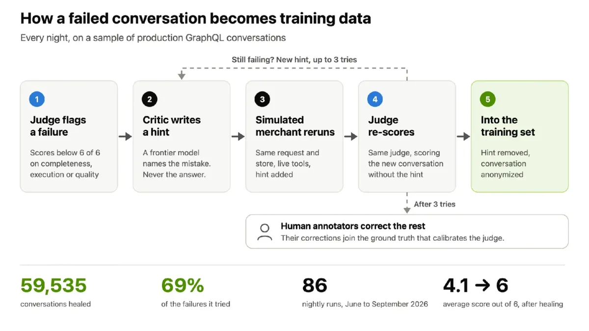

任務專家：六輪飛輪把開源模型練到略勝前沿
導讀原文：Shopify Engineering〈How Shopify turns open models into task experts〉——工程部落格，六步飛輪的製程紀錄與自家實測
Shopify 的購物助理 Sidekick，把 token 重的子任務交給「任務專家」——為單一任務後訓練的開源模型。
GraphQL 子代理換上後訓的 Nemotron 3.5 Lightning：評分略高於前沿模型、快 7 倍、成本低約 90%（Shopify 自報）。

第 1 步先造尺：產品專家寫 rubric，涵蓋完整性、執行、回應品質三構面；再用 GEPA 與 ACE 優化器把評審調到與留出的人類標籤一樣準。
第 2 步墊高門檻：autoresearch 一次只改一個小地方——prompt、工具描述或控制流，評審分數變高才保留。這是開源模型要打敗的基準線。
任務專家站在架構的哪一層
30B 參數中每 token 活化 3B
本站重繪；原文只有文字敘述與飛輪圖，未畫此分層。
子代理的工時壓在讀：每寫 1 個 token 要讀約 40 個，多是 API schema 與文件。
前沿 API 逐 token 計費，成本因此壓在 context 上（由讀寫比推算）。
Shopify 不預訓練：候選模型放進真實子代理，用同一套工具與評審實測，權衡起始品質、服務速度、Megatron Bridge 支援度。
原文只說「數個子代理」跑自訓模型，未給清單；權重歸 Shopify，何時換版本自己決定。
失敗對話，每晚變成訓練教材

近期 86 個夜間批次（2026 年 6–9 月）修好 59,535 則 GraphQL 對話，等於它嘗試修復件數的 69%。
提示而非答案，讓修好的對話保留完整推理（編輯推論：直接給答案，範例只學會抄）。
其餘由人類標註員修正，修正併入校準評審的 ground truth——尺越用越準。
同一份考卷：三個模型的成績單
| 模型 | GraphQL judge 分數 | 中位數回應 | p99（最慢 1%） |
|---|---|---|---|
| Nemotron 3.5 Lightning Shopify 後訓 | 37.7 → 74.5 六輪、61,000 範例 | 0.87 秒 | 2.51 秒 |
| Qwen3.5-9B Shopify 後訓 | 原文未給 | 0.97 秒 | 5.50 秒 |
| 前沿模型 API | 73 | 6.50 秒 | 20.3 秒 |
→ 可橫向滑動
同一段生產 GraphQL 流量、以 AIPerf 重播；條短＝好。Qwen3.5-9B 之名出自原文配圖。全表為 Shopify 自報；該流量下服務成本低約 90%，各後訓模型自託管全線省 90–98%。
第一輪就從 37.7 跳到 61.5，六輪後 74.5：只贏前沿模型 1.5 分，但快 7 倍、成本少約 90%。
p99 快 8 倍：2.51 對 20.3 秒；Qwen3.5-9B 中位數貼近，p99 慢逾兩倍。
推論優化不是事後補救：AIPerf 用合成文字重播生產軌跡，不碰客戶資料。
Shopify 貢獻的 live-response replay，讓多輪測試像生產一樣命中 prefix cache。
選服務堆疊也靠同一批數據：Buyer Profile 批次負載比過 vLLM、SGLang、TensorRT-LLM。
結果 TensorRT-LLM 每 GPU 產出最高。
硬體也進飛輪。Analytics 模型同一份 FP8 後訓：8 張 B300 比 8 張 H200 快 1.86 倍、GPU 時數少 46%（Shopify 量測）。SimGym 購物模擬在 B200 上比 H200 快 4.5 倍、成本低 1.48 倍（NVIDIA 量測）。後訓走 Megatron Bridge：Hugging Face checkpoint 接上 Megatron Core，跨節點在 Nebius 只改設定、不改程式。
帶走三件事
先有尺，才有迭代。rubric 與校準過的評審，是後續每個決定的同一把尺。
換模型是最後一步。先榨乾前沿代理，開源模型才知道要打敗誰。
省的是 token，不是智能。讀多寫少的任務交給小模型，成本少約 90%。
同一主題的其他館藏
導讀為本站編輯內容（AI 摘解自原文與館藏重點，非官方文件）；引述數據出自原文，圖解與小標為編輯整理。內容經對照原文的獨立事實審查後發布。